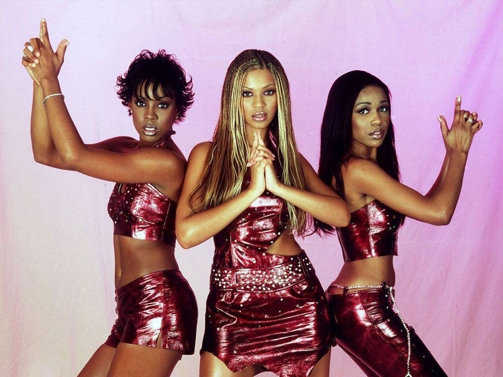

DESTINY'S CHILD
Destiny´s Child foi um gir group estadunidense de pop e R&B de grande sucesso no final da década de 90 e início dos anos 2000. A formação final e mais conhecida da banda era composta pelas cantoras Beyoncé, Kelly Rowland e Michelle Williams. Foi formado em 1997 em Houston no Texas mas as integrantes tinham iniciado sua carreira musical em 1990 fazendo de outra girlband chamada Girl´s Tyme e que contava com a formação de quinteto. Em busca de contratos de gravação assinou com a Columbia Records 1997 abandonando o nome Girl´s Tyme e criando a identidade da Destiny´s Child. O grupo ganhou visibilade realmente com o seu segundo álbum de studio “The Writings´s on The Wall” em 1999 que contava com singles número um no ranking da Billboard como “Bills Bills Bills” e “Say My Name”. Apesar de toda a fama, sucesso comercial e de serem aclamadas pela crítica o grupo foi afetado por conflitos internos e também perturbações judiciais decorrentes do desejo das integrantes Robert e Luckett de separar a banda do seu gerenciador alegando que ele tinha um favoritismo por Beyoncé. Em 2000 as duas integrantes deixaram o grupo e foram substituídas por Michele Williams e Farrah Franklin que logo deixou a formação da Destiny´s Child que seguiu sua jornada na musica como trio e acabou se tornando a formação mais famosa e bem sucedida do grupo que lançou mais dois álbuns “Survivor” (2001) e “Destinys Fullfield”(2004) que foi seu ultimo álbum que deu fechamento a carreira como trio e anunciou a separação das três cantoras. O grupo já se reuniu algumas vezes desde a separação, no SuperBowl em 2013 e no show de Beyoncé no Coachella em 2018.